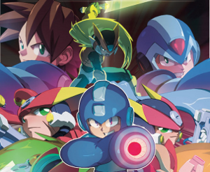
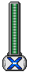

In the year 29XX, peace has been restored to the humans and reploids on Earth. Since 200X, robots and humans have always had conflict, but now, a new era has been born. No longer will the evil forces of Dr. Wily, the Mavericks, Neo Arcadia, or Model W plague civilization; they have been defeated by the great Mega Men of time past. Through the brave efforts of heroes such as Megaman, X, Zero, and Vent, all has returned to normal, and both humans and reploids are happy.
One day, a brilliant scientist discovered the age old records of the heroes of the past. Using advanced technology, Dr. Lite was able to recreate all the old heroes, copying their parts and memory chips. The world looked on with excitement as the Mega Men were reborn.

Yet, the Dr. Lite's discovery was not without consequence. A group of Russian scientists known as the Cossacks stole the Mega Man records from Dr. Lite's Lab and created "enhanced" versions of the heroes of old. However, these new Mega Men became corrupted of their power and had little regard for what the world called "peace." One day, the Cossack lab exploded and these Mega Men stepped out into the world. They used their incredible power to take the planet by storm, but they bickered over who would rule their new dominion. They decided to hold a tournament in which they fought each other to see who was the strongest and most fit to rule.
Dr. Lite, horrified at what he had done, decided to use his own Mega Men to defeat the Cossack versions. He had his Mega Men join the tournament, hoping that they would destroy the Cossack Mega Men. Yet, it was impossible to differentiate between Lite and the Cossack Mega Men because they were based on the same data. Lite's Mega Men had no choice but to defeat all Mega Men, friend or foe, striving to make it to the top to ensure the retirement of all Mega Men.
Who shall prevail in this tournament? Will the forces of good once again defeat evil? Or will Earth's "everlasting" peace come to an abrupt end? Only you can decide!
Getting Started
- Open Mega Man Multiplayer by double clicking either the JNLP or the JAR file
- Select your character and set up your control scheme
- Select a stage from the drop down menu
- Click Play to begin!
Mega Man Multiplayer is a Java based application, so you will need to have at least Java 6 installed on your computer. Install Java
*If you get an error named "Unsupported major.minor version", you might have multiple versions of Java on your machine. Uninstall all JREs and install the latest from Sun.
If you are running the JAR version of the game, place the JAR file in a folder by itself. If you move the JAR file later, you may have to reinstall your stage data.
Controls
Down + Jump = drop through platform
Dash + Jump = Dash Jump
Move against a wall while falling = Slide
Jump while sliding = Wall Jump (can chain several in a row to climb the wall)
Gameplay
Play begins when both players warp on screen. Player 1 will generally be on the left, and Player 2 on the right. Player 1's health bar is on the left, and Player 2's is on the right. Your objective to defeat your opponent using the moves at your disposal by draining their health bar to zero.
Additional Notes:
-  If you fall off the bottom of the stage, you will die, and your opponent will be victorious. If your opponent falls off the stage, they will die, and you will be victorious.
- If your healthbar drains to 0, you will die, and your opponent will be declared victorious. Likewise, if you drain your opponent's healthbar to 0, they will die and you will be victorious.
- If you get hit, you will lose health and will be stunned for a short period of time in which you can do nothing.
- After you are through the stun period, you will be invincible for a short period of time. Enemy attacks will not harm you, so use this time to recover. You can still die by falling off the stage, however.
Installing Stages
Downloading Stages
You can download a stage from the Downloads page. Stages have the file extension ".stg".
Installing Stages
Once you have the stage file, install it by clicking the "Install Stage..." button in the main menu. Navigate to your stage file and click open. If you are running the Java Web Start Version, the game may prompt you to give permission to access your local file system before you can open the stage file.
Stages are stored in a specific place on your file system. If you are running the Java Web Start version of the game, stages will be located in the JWS Cache. If you are running the JAR version of the game, stages will be located in the stages folder in the same folder the jar file is in.